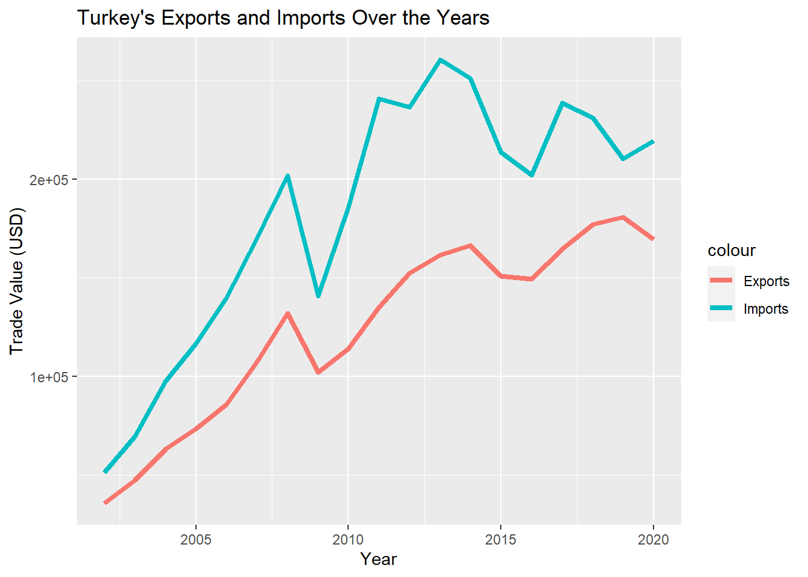

3.1 Introduction: Exploratory Data Analysis on WITS data
World Integrated Trade Solution (WITS) emerges as a pivotal platform, offering a comprehensive view of international trade dynamics, with a particular focus on Turkey from 2002 to 2020. This powerful tool aggregates data from diverse sources to furnish users with valuable insights into Turkey’s merchandise trade, tariffs, and non-tariff measures during this specific period. With an expansive database, WITS facilitates informed decision-making and strategic planning for researchers, policymakers, and businesses interested in Turkey’s trade landscape.
Embarking on an Exploratory Data Analysis (EDA) journey within WITS involves loading datasets, cleaning data, and employing statistical and visual analyses specific to Turkey’s trade from 2002 to 2020. This process unveils trade patterns, identifies trends, and provides actionable insights, enabling stakeholders to navigate the complexities of Turkey’s trade dynamics during this crucial timeframe. The synergy between WITS and EDA empowers users to make informed decisions and strategic choices, fostering a more interconnected and informed landscape for Turkey’s economy and trade.
3.2 Step 1: Load Required Libraries
library(tidyverse)
── Attaching core tidyverse packages ──────────────────────── tidyverse 2.0.0 ──
✔ dplyr 1.1.4 ✔ readr 2.1.4
✔ forcats 1.0.0 ✔ stringr 1.5.1
✔ ggplot2 3.4.4 ✔ tibble 3.2.1
✔ lubridate 1.9.3 ✔ tidyr 1.3.0
✔ purrr 1.0.2
── Conflicts ────────────────────────────────────────── tidyverse_conflicts() ──
✖ dplyr::filter() masks stats::filter()
✖ dplyr::lag() masks stats::lag()
ℹ Use the conflicted package (<http://conflicted.r-lib.org/>) to force all conflicts to become errors
3.3 Description: Loading necessary libraries provides access to functions and tools that simplify data manipulation and visualization. dplyr is helpful for data wrangling, and ggplot2 is excellent for creating informative and visually appealing plots.
3.4 Step 2: Load Datasets
# Load the datasetsloaded_datasets <-readRDS("wits_data.rds")read_wits_turkey_data_only <- loaded_datasets$wits_turkey_data_onlyread_wits_turkey_data_with_partners <- loaded_datasets$wits_turkey_data_with_partners
3.5 Description: Loading datasets is the initial step in any data analysis. It allows us to bring in the data that we’ll be working with throughout the analysis.
year reporter_iso reporter_name commodity_code
Min. :2002 Length:90663 Length:90663 Length:90663
1st Qu.:2006 Class :character Class :character Class :character
Median :2011 Mode :character Mode :character Mode :character
Mean :2011
3rd Qu.:2016
Max. :2020
commodity_name section_code section_name trade_value_usd_imp
Length:90663 Length:90663 Length:90663 Min. :0.000e+00
Class :character Class :character Class :character 1st Qu.:4.259e+05
Mode :character Mode :character Mode :character Median :3.138e+06
Mean :3.836e+07
3rd Qu.:1.574e+07
Max. :4.073e+10
trade_value_usd_exp
Min. :0.000e+00
1st Qu.:9.152e+04
Median :1.150e+06
Mean :2.612e+07
3rd Qu.:8.788e+06
Max. :1.334e+10
year reporter_iso reporter_name partner_iso
Min. :2002 Length:3887005 Length:3887005 Length:3887005
1st Qu.:2008 Class :character Class :character Class :character
Median :2013 Mode :character Mode :character Mode :character
Mean :2012
3rd Qu.:2017
Max. :2020
partner_name commodity_code commodity_name section_code
Length:3887005 Length:3887005 Length:3887005 Length:3887005
Class :character Class :character Class :character Class :character
Mode :character Mode :character Mode :character Mode :character
section_name trade_value_usd_imp trade_value_usd_exp
Length:3887005 Min. :0.000e+00 Min. :0.000e+00
Class :character 1st Qu.:0.000e+00 1st Qu.:4.230e+02
Mode :character Median :0.000e+00 Median :8.367e+03
Mean :8.947e+05 Mean :6.093e+05
3rd Qu.:1.157e+04 3rd Qu.:8.157e+04
Max. :1.749e+10 Max. :6.528e+09
3.7 Description: Checking the structure and summary of the datasets provides an understanding of the variables, data types, and basic statistics. This helps identify potential issues and informs subsequent cleaning and analysis steps.
3.9 Description: Cleaning the data involves addressing missing values and outliers. It ensures that the data is reliable and ready for further analysis.
3.10 Step 5: Exploratory Data Analysis (EDA)
3.10.1 Analyze Exports and Imports over the Years
total_exports <- read_wits_turkey_data_only %>%group_by(year) %>%summarize(total_exports =sum(trade_value_usd_exp))total_imports <- read_wits_turkey_data_only %>%group_by(year) %>%summarize(total_imports =sum(trade_value_usd_imp))# Visualize exports and imports over the yearsggplot() +geom_line(data = total_exports, aes(x = year, y = total_exports, color ="Exports"), size =1.5) +geom_line(data = total_imports, aes(x = year, y = total_imports, color ="Imports"), size =1.5) +labs(title ="Turkey's Exports and Imports Over the Years", x ="Year", y ="Trade Value (USD)")
Warning: Using `size` aesthetic for lines was deprecated in ggplot2 3.4.0.
ℹ Please use `linewidth` instead.

Description: Analyzing exports and imports over time provides insights into the trade trends of the country. Visualization helps in identifying patterns and understanding the overall trade dynamics.
# Get a color palette from RColorBrewerpartner_colors <-brewer.pal(length(top_partners$partner_name), "Set3")# Visualize top trading partnersggplot(data = top_partners, aes(x =reorder(partner_name, -total_trade), y = total_trade, fill = partner_name)) +geom_bar(stat ="identity", color ="black") +labs(title ="Top 10 Trading Partners", x ="Partner", y ="Total Trade Value (USD)") +theme(axis.text.x =element_text(angle =90, hjust =1)) +scale_fill_manual(values = partner_colors)+theme(legend.position ="none")
Description: Analyzing trade with specific partners helps in identifying key collaborators. Visualizing the top trading partners provides a clear understanding of the major contributors to the country’s trade.
# Get a color palette from RColorBrewerpartner_colors <-brewer.pal(n =length(top_partners$partner_name) *2, name ="Paired")
Warning in brewer.pal(n = length(top_partners$partner_name) * 2, name = "Paired"): n too large, allowed maximum for palette Paired is 12
Returning the palette you asked for with that many colors
# Visualize import and export relations with top trading partnersggplot(data = top_partners, aes(x =reorder(partner_name, -total_export - total_import))) +geom_bar(aes(y = total_export, fill ="Export"), stat ="identity", position ="dodge", color ="black") +geom_bar(aes(y =-total_import, fill ="Import"), stat ="identity", position ="dodge", color ="black") +labs(title ="Import and Export Relations with Top 10 Trading Partners", x ="Partner", y ="Total Trade Value (USD)") +scale_fill_manual(values =c("Export"= partner_colors[1], "Import"= partner_colors[2]), name ="") +theme(axis.text.x =element_text(angle =90, hjust =1),legend.position ="top")
Description: This bar plot illustrates the import and export relations between Turkey and its top 10 trading partners. Positive bars represent export values, while negative bars indicate import values. Each bar corresponds to a specific partner, and distinct colors differentiate between export and import transactions. The plot offers a concise overview of Turkey’s trade dynamics with its key partners, emphasizing the balance of trade and highlighting significant trading relationships.
library(ggplot2)library(dplyr)# Replace "YourFirstYear" and "YourEndYear" with the actual years that is selected for the analysisfirst_year <-2015end_year <-2020# Calculate the total trade value for the first and end years for each partnertotal_trade_by_partner <- read_wits_turkey_data_with_partners %>%group_by(partner_name) %>%summarise(total_trade_first =sum(trade_value_usd_imp[year == first_year] + trade_value_usd_exp[year == first_year]),total_trade_end =sum(trade_value_usd_imp[year == end_year] + trade_value_usd_exp[year == end_year]))# Find the top 10 partners based on the total trade valuetop_10_partners <- total_trade_by_partner %>%top_n(10, wt = total_trade_end)# Calculate the percentage changepercentage_change <- top_10_partners %>%mutate(percentage_change = ((total_trade_end - total_trade_first) / total_trade_first) *100)# Create a lollipop chartggplot(percentage_change, aes(x =reorder(partner_name, percentage_change), y = percentage_change)) +geom_segment(aes(xend =reorder(partner_name, percentage_change), yend =0), color ="skyblue", size =1) +geom_point(color ="red", size =3) +labs(title ="Top 10 Partners: Percentage Change in Total Trade Value (2015 to 2020)",x ="Partner",y ="Percentage Change in Total Trade Value") +theme_minimal() +theme(axis.text.x =element_text(angle =45, hjust =1))
Description: This lollipop chart illustrates 5 year trade value (total import + export) change between Turkey and its top 10 trading partners. Positive bars represent increase in trade values between Turkey and its top 10 partners in 5 years, while negative bars indicate decrease in trade relationship. The chart offers a concise overview of Turkey’s trade relationship with its key partners, presenting input for further analysis on defining partners that have close relationship with Turkey.
library(ggplot2)library(dplyr)# Filter data for Iraqtrade_data_iraq <- read_wits_turkey_data_with_partners %>%filter(partner_name =="Iraq")# Add a new column for total tradetrade_data_iraq <- trade_data_iraq %>%mutate(total_trade = trade_value_usd_imp + trade_value_usd_exp)# Group by section_name and calculate total trade values for each section_nametotal_trade_values_5_year <- trade_data_iraq %>%filter(year >=2015& year <=2020) %>%group_by(section_name) %>%summarise(total_trade_value_5_year =sum(total_trade))# Filter top 5 section namesfiltered_commodity_data <- total_trade_values_5_year %>%top_n(5, wt = total_trade_value_5_year)# Create a pie chartggplot(filtered_commodity_data, aes(x ="", y = total_trade_value_5_year, fill = section_name)) +geom_bar(stat ="identity", width =1, color ="white") +coord_polar(theta ="y") +labs(title ="Top 5 Section Name Breakdown of Total Trade Value (2015-2020)",fill ="Section Name") +theme_void() +theme(legend.position ="bottom")
Description: These pie charts illustrate commodity breakdown data of each country that has close relationship with Turkey which are defined in previous analysis. Iraq, USA and Spain were analyzed in this section. Each pie chart represent share of top 5 commodities in total trade values.
# Truncate section names to the first 20 charactersexport_plot_data$truncated_name <-str_trunc(export_plot_data$section_name, 50)# Get distinct truncated names for colorscolor_names <-unique(export_plot_data$truncated_name)# Generate a limited number of distinct colorscolors <-brewer.pal(length(color_names), "Set3")ggplot(data = export_plot_data, aes(x =reorder(section_name, -total_export), y = total_export, fill = truncated_name)) +geom_bar(stat ="identity", color ="black") +labs(title ="Top 10 Diversity of Exported Products (2002-2020, Turkey)", x ="Products", y ="Total Export Value (USD)") +theme(axis.text.x =element_blank(), axis.title.x =element_blank(), legend.position ="bottom") +guides(fill =guide_legend(nrow =5)) +scale_fill_manual(values =setNames(colors, color_names), name ="")
Description:The “Diversity of Exported Products” graphic provides insights into Turkey’s international trade from 2002 to 2020. It showcases the top 10 product categories that Turkey has predominantly exported over the years. Each product category is represented by a distinct color, offering a visual representation of the diversity and distribution of exported goods. The vertical bars display the total export values in USD for each product category, providing a clear overview of Turkey’s major export sectors. The graphic aids in identifying trends, patterns, and the relative significance of various product categories in Turkey’s export landscape.
# Truncate section names to the first 20 charactersimported_plot_data$truncated_name <-str_trunc(imported_plot_data$section_name, 50)# Get distinct truncated names for colorscolor_names <-unique(imported_plot_data$truncated_name)# Generate a limited number of distinct colorscolors <-brewer.pal(length(color_names), "Set3")ggplot(data = imported_plot_data, aes(x =reorder(section_name, -total_import), y = total_import, fill = truncated_name)) +geom_bar(stat ="identity", color ="black") +labs(title ="Top 10 Diversity of Imported Products (2002-2020, Turkey)", x ="Products", y ="Total Import Value (USD)") +theme(axis.text.x =element_blank(), axis.title.x =element_blank(), legend.position ="bottom") +guides(fill =guide_legend(nrow =5)) +scale_fill_manual(values =setNames(colors, color_names), name ="")
Description: The “Diversity of Imported Products” graphic illustrates the diversity of products that Turkey has imported from other countries between 2002 and 2020. Similar to the exported products graphic, this visualization highlights the top 10 imported product categories. Each category is uniquely colored for easy identification. The vertical bars display the total import values in USD for each product category, offering insights into the composition of Turkey’s imports. This graphic assists in understanding the import dynamics, identifying significant product categories, and discerning patterns in Turkey’s international trade relationships.
Together, these graphics provide a comprehensive view of Turkey’s trade dynamics, showcasing both the diversity of exported and imported products over the years.
# Filter the data with the selected top export productsexport_plot_data <- read_wits_turkey_data_with_partners %>%filter(section_name %in% top_export_products$section_name) %>%group_by(year, section_name) %>%summarize(total_export =sum(trade_value_usd_exp))
`summarise()` has grouped output by 'year'. You can override using the
`.groups` argument.
# Filter the data based on the top export productsfiltered_export_data <- export_plot_data %>%filter(section_name %in% top_export_products$section_name)# Truncate section names to the first 20 charactersfiltered_export_data$truncated_name <-str_trunc(filtered_export_data$section_name, 50)# Get distinct truncated names for colorscolor_names <-unique(filtered_export_data$truncated_name)# Generate a limited number of distinct colorscolors <-brewer.pal(length(color_names), "Set3")# Create the plot with geom_pointggplot(data = filtered_export_data, aes(x = year, y = total_export, color = truncated_name)) +geom_line(size =1.2, alpha =0.7) +labs(title ="Export Trends of Top 10 Products (2002-2020, Turkey)", x ="Year", y ="Total Export Value (USD)") +theme(legend.position ="bottom") +guides(color =guide_legend(nrow =5)) +scale_color_manual(values =setNames(colors, color_names), name ="")
Description: Explore the export trends of Turkey’s top 10 product categories from 2002 to 2020. Each line represents a product category, showcasing the variation in total export values over the years. The colors distinguish different product categories, providing a visual overview of their respective export dynamics.
# Filter the data with the selected top import productsimport_plot_data <- read_wits_turkey_data_with_partners %>%filter(section_name %in% top_import_products$section_name) %>%group_by(year, section_name) %>%summarize(total_import =sum(trade_value_usd_imp))
`summarise()` has grouped output by 'year'. You can override using the
`.groups` argument.
# Filter the data based on the top import productsfiltered_import_data <- import_plot_data %>%filter(section_name %in% top_import_products$section_name)# Truncate section names to the first 20 charactersfiltered_import_data$truncated_name <-str_trunc(filtered_import_data$section_name, 50)# Get distinct truncated names for colorscolor_names <-unique(filtered_import_data$truncated_name)# Generate a limited number of distinct colorscolors <-brewer.pal(length(color_names), "Set3")# Create the plot with geom_pointggplot(data = filtered_import_data, aes(x = year, y = total_import, color = truncated_name)) +geom_line(size =1.2, alpha =0.7) +labs(title ="Import Trends of Top 10 Products (2002-2020, Turkey)", x ="Year", y ="Total Import Value (USD)") +theme(legend.position ="bottom") +guides(color =guide_legend(nrow =5)) +scale_color_manual(values =setNames(colors, color_names), name ="")
3.11 Description: Explore the import trends of Turkey’s top 10 product categories from 2002 to 2020. Each line represents a product category, showcasing the variation in total import values over the years. The colors distinguish different product categories, providing a visual overview of their respective import dynamics.
3.12 Step 6: Interpretation and Conclusions
Description: In this final step, interpretations and conclusions are drawn based on the analysis. It’s an opportunity to provide insights into the data, make recommendations, and outline potential next steps for further final report and presantation.